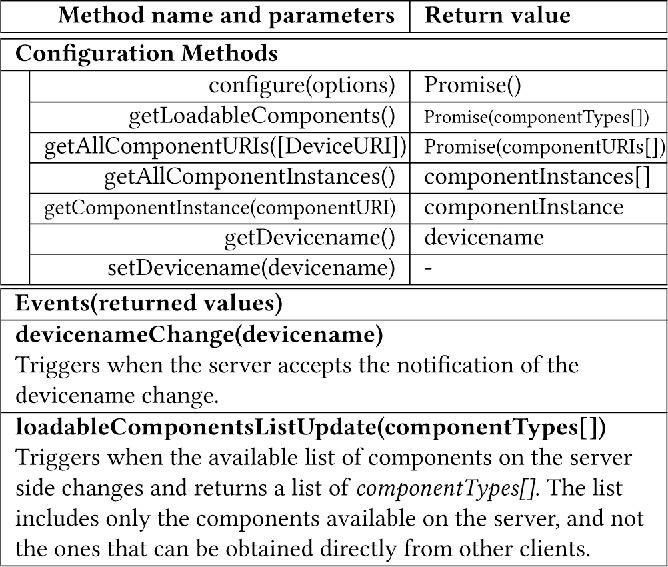
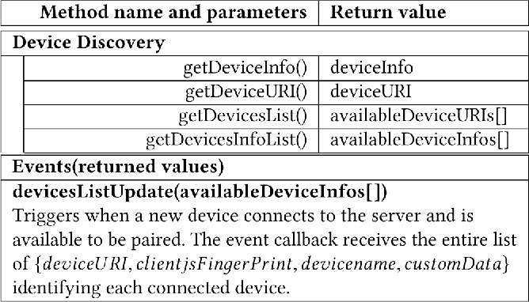
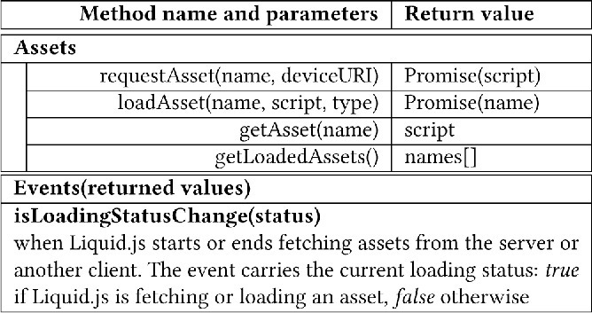
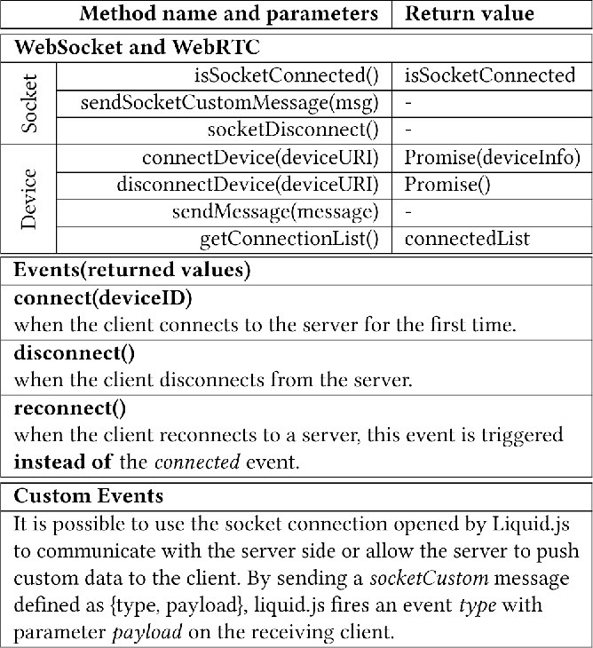

DOI: https://doi.org/10.1145/3184558.3188738
WWW '18: Proceedings of The Web Conference 2018, Lyon,
France, April 2018
In the past years the average number of Web-enabled devices owned by each user has significantly increased. Liquid Web applications enable users to take advantage of all their devices sequentially to migrate their running applications across them or simultaneously when running different views of the same application at the same time on each device. Developers of liquid Web application need to control how to expose the liquid behavior of their cross-device Web applications to the users. To do so, they can use the API of Liquid.js we describe in this paper. Liquid.js is a framework for building component-based rich Web applications which run across multiple Web-enabled devices. The framework is based on technologies such as Polymer, WebRTC, WebWorkers, PouchDB and Yjs. Liquid.js helps to build decentralized Web applications whose components can seamlessly flow directly between Web browsers carrying along their execution state. The Liquid.js API gives developers fine-grained control over the liquid user experience primitives, device discovery, and the lifecycle of liquid Web components.
ACM Reference
Format:
Andrea Gallidabino and Cesare Pautasso. 2018. The Liquid
User Experience API. In WWW '18 Companion: The 2018
Web Conference Companion, April 23–27,
2018, Lyon, France. ACM, New York, NY, USA
9 Pages. https://doi.org/10.1145/3184558.3188738
As more and more heterogeneous devices (e.g., mobile phones, tablets, laptops, but also watches, cars and smart TVs) are used to access the Web, it becomes important to take responsive Web design – where Web applications can adapt to individual devices – to the next level [10]. The liquid software metaphor [7, 13] represents how software should behave when it is deployed across multiple devices: as a liquid adapts to the shape of its container, similarly, liquid software flows across and adapts to take full advantage of the set of devices on which it is deployed. Liquid software can: (1) adapt its user interface to the set of devices being concurrently used to run the application; (2) seamlessly migrate a running application across multiple devices following the user attention [11]; (3) synchronize the state of applications distributed across multiple devices.
Native mobile platforms have started to feature continuity/handoff capabilities to address multi-device usage, a feature that is only starting to become present in few individual Web applications, but so far has been mostly ignored within the underlying Web platform. In this paper we describe the developer API of the Liquid.js for Polymer framework, which is used to build component-based, decentralized Web applications that can be dynamically deployed across multiple Web-enabled devices.
Liquid.js for Polymer1 is a prototype framework for developing liquid Web applications which can be used with existing Polymer-based rich Web applications. To get started, the framework simply requires developers to annotate existing Polymer custom elements to explicitly indicate which property values should be transferred or synchronized across devices [4]. This paper fully describes the features and the APIs exposed by the framework that can be used by developers for creating customized liquid user experiences with fine-grained control over the lifecycle of liquid Web applications: decentralized Web applications that can be dynamically deployed on multiple Web-enabled heterogeneous devices.
Liquid.js allows developers to support the following use case scenarios [6]: • Sequential use - one single user runs the application using one single device at a time. The user can switch from one device to another and continue to run the same application on the second device with the expectation that: 1) the application seamlessly adapts to the new device hardware and software capabilities and 2) the user can instantaneously resume working on the new device. For example, after planning a trip using a map displayed on a large-screen fixed device, the directions are transferred on a mobile device that will be carried along while traveling. • Simultaneous use - one user connects to the application from multiple devices at the same time, i.e., the user opens a session by running the application both on his phone and on his laptop simultaneously. For example, credit card payments entered on e-commerce Websites using a personal computer may require approval by using the fingerprint or face scanner found on a smartphone before the checkout transaction completes. Depending on the capabilities of the devices connected, each device may show a responsive view of the same user interface, or it could display a dedicated view, allowing each device to play a distinct and complementary role in the distributed user interface of the application [8]. • Collaborative use - several users open and run the same application on multiple devices. The collaboration between the users can be either sequential or simultaneous. For example, users build a collaborative slideshow by selecting pictures taken with their personal phones to be displayed on a shared public display. The multi-user scenarios with liquid software and data flowing across device ownership boundaries has important privacy and security implications that are not discussed in this paper. Also the API presented in this paper does not feature any authentication or access control mechanism, which is out of scope for this paper where we focus on the single-user scenarios.
In the literature there are many frameworks that enable the creation of Web applications with behaviors originally described in the Liquid Software manifesto [13]. Nevertheless Liquid.js is the first one to propose an API featuring the liquid user experience primitives described in [5].
PolyChrome [1] is a centralized Web framework for building co-browsing applications, where the implemented views can span on multiple surfaces deployed on multiple devices. The framework defines and supports four predefined layouts: stitching, replication, nesting, and overloading. The PolyChrome API makes a distinction between interactions and events: interactions change the data of the application and are sent to the Web server where the central state of the application is stored; events change the view displayed on the devices and are directly exchanged between all paired devices. Polychrome can create components out of legacy applications in order to create views spanning across multiple devices. Polychrome makes the whole Web application liquid, while Liquid.js targets component-based applications: in Liquid.js it is possible to migrate, fork and clone individual components across different devices so that developers can have full control on the granularity of the liquid user experience.
In the cross-device distributed user interfaces research area XD-MVC [9] is a Web framework which can be used to develop decentralized cross-device applications focused on automatic cross-device adaptation of its user interface. The framework allows to easily decompose and migrate component-based Web application built on the Polymer framework. Migration is implemented at the application level, however only the state is synchronized between devices. From the developer point of view, migration is implemented by clipping off child components from their parents depending on which device they are deployed, simulating the expected migration behavior expected by Liquid software. XD-MVC supports declarative adaptation of the view layer as views and components can be annotated with rules that describe how components are expected to be shown across multiple devices. By interpreting up these rules, XD-MVC is able to decide which parts of a view need to be clipped depending on the configuration of the set of connected devices. The Liquid.js API we present in this paper allows developers to programmatically control and fine-tune the deployment configuration of liquid Web applications and could be used to implement similar rule-based adaptation policies.
Liquid.js for Polymer [3] is a Web framework for building decentralized, component-based, liquid Web applications that can be deployed across multiple heterogeneous devices. The assumption is that applications developed using Liquid.js are built using the Web Components standard, which provides the necessary abstractions to structure the application user interface and its state into modular, reusable and composable units and that can be independently deployed across multiple devices. While for sequential usage scenarios it is sufficient to make the whole Web application liquid, a fine-grained component-based approach is particularly suitable for simultaneous usage scenarios. This way, developer may control the deployment configuration of each part of the user interface and best decide how to empower the users to rearrange and lay out the Web application across all available devices.
More specifically, we assume that components are built with the Polymer framework, developed by Google. Liquid.js is compatible with any of the Polymer components that can be found on the Catalogue of Web Components2 as well as with any Polymer component built by Web developers complying with Polymer v1.x rules. Liquid.js transparently takes care of the state synchronization thanks to Yjs [12], a connector for concurrency control and conflict resolution which communicates over both WebSockets and WebRTC peer to peer connections.
Developers using Liquid.js [4] need to inject the Liquid behavior into the Polymer components they decide to make Liquid so that they can be dynamically migrated to run on other devices. More precisely, the Liquid behavior gives to a stateful Web component the ability to be dynamically deployed, migrated, forked, and cloned on any Web browser-enabled device.
To do so, the state of a Web component can be annotated following the Liquid.js conventions. Developers can choose which components are Liquid and they can explicitly define which properties should be shared with other devices upon the migration of the component. Liquid.js reads the annotated components and transparently manages asset deployment, state migration and synchronization between components running on different devices. The Liquid.js convention labels any Polymer component importing the Liquid behavior as a liquid component, and any Polymer property that need to be synchronized as a liquid property. Liquid properties can only be defined inside a liquid component. A liquid component can be instantiated on any device running a Web browser connected to the liquid Web application discovery server.
Liquid.js allows users to instantiate any component provided by the Web application on any of their devices, furthermore it allows users to migrate those components directly across any other device. By default, Liquid.js wraps the Polymer component around a frame which displays a menu with the corresponding liquid user experience actions (i.e., migrate the component to another device as shown in Figure 2 a). Developers can however choose to hide such frame and completely redesign and customize the liquid user experience using the API described in this paper.
Whenever a component moves across devices, if the target does not yet own the assets of the component, it will request them from the source so that they can be dynamically loaded on the new device. To do so, Liquid.js supports both a centralized and decentralized approach to distribute and deploy the assets of a Web application. Like any other traditional Web application, the server of the liquid application (see Figure 1) stores all the assets of the application (i.e., the HTML, CSS, and JavaScript files containing the definition of liquid components). As assets are downloaded by the clients connected to the application, Liquid.js no longer relies only on the central Web server. Since clients own a copy of the assets they can help the server by sending the assets to new clients connecting to the application. Clients can distribute assets to their neighbouring devices through peer-to-peer channels created with the WebRTC Peer Connection and DataChannel APIs. Creating a fully distributed architecture from the very beginning is impossible with current Web technologies, because users connecting from their Web browsers do not yet own a public IP address, thus they need to connect to a Web server in any case for discovery purposes. Therefore the server of the liquid application takes care of the discovery of the clients by implementing a Signaling Server which can also be used for relaying messages between the devices that cannot create a direct WebRTC connection between them.
Liquid.js identifies liquid properties, liquid components and devices with unique identifiers (URIs). The framework applies an identifier to each device upon connection and it assigns an identifier to liquid components and their properties whenever they are instantiated. These identifiers can be used as URIs [2] within the framework whenever there is the need to refer to them, e.g. in order to migrate a liquid component from a device to another the source componentURI and the target deviceURI have to be known. Liquid.js URIs follow the liquid URI scheme and are dereferenceable through the framework and not by using the HTTP protocol. URIs simplify the design of the API as the same methods can be applied both to components deployed on the device issuing the command as well as to remote components.
The liquid behavior transparently communicates directly with the core components of the library, the Liquid API component, and the y-liquid component (see Figure 1). The latter defines the implementation of a connector for the Yjs framework [12] which takes care of synchronizing data structures between devices. Whenever the state of the component's liquid properties changes, the Yjs and the y-liquid connector create and send synchronization messages which are automatically delivered to other paired devices.
The existing behavior of any application built without using Liquid.js (legacy Polymer components) is left unchanged also if it is upgraded to liquid, as the components still have full access to any W3C HTML5 APIs or any imported library defined in the main JavaScript environment. Liquid.js wraps the solid Polymer components and sets up proxy traps and object observers on the annotated Polymer properties. This approach allows to separate concerns between the liquid behavior and the actual component behavior without requiring developers to change the code they already own. Instead, they only need to explicitly annotate as liquid the properties whose values should be migrated or kept synchronized across devices. For more information on the internals of Liquid.js, refer to [3].
The core Liquid.js API deals with device configuration and discovery, controls the liquid component lifecycle and exposes the liquid user experience primitives that can be used for advanced customization scenarios of the default user experience controls provided by Liquid.js. Additionally, the API offers a cross-device version of many useful HTML5 APIs, such as Liquid WebWorkers, for offloading computationally intensive tasks across devices, Liquid Storage, for managing the runtime state of components shared across multiple devices, and Local Persistence, for storing snapshots of component state. The Assets API supports peer to peer deployment of the Web application assets and the Connection API provides a decentralized event bus. Many of the described methods are asynchronous because they require inter-device communication. In this case, they return Promises to represent the successful or failed completion of the asynchronous method invocation.
|  |
The Framework Configuration API (see Table 1) allows developers to configure the client-side of Liquid.js and instantiate the Liquid.js framework properly. The configure method expects an options object (see Listing 1 for default values) in which the developer should at least define the host address of the Web server used for discovery and asset deployment.
The getLoadableComponents returns the list of components stored and accessible from the server-side. To enumerate the component types cached and available from other devices, use the Assets API.
|
Method name and parameters
|
Return value | |
|
Component Lifecycle
|
||
| loadComponentType(componentTypeURI) | Promise(componentTypeURI) | |
| createComponent(componentType[,DeviceURI, DOMElem, UIType]) | Promise(createdComponentURI) | |
| registerComponent(componentURI) | Promise(componentURI) | |
| instantiateComponent(compType[,DOMEl, UIType]) | Promise(instantiatedComponent) | |
| deleteComponent(componentURI) | Promise() | |
|
Liquid Storage for Stateful Component
Synchronization
|
||
| getState(componentURI) | Promise(stateSnapshot) | |
| setState(componentURI, stateSnapshot) | Promise(componentURI) | |
| pairComponent(sourceCompURI1, targetCompURI2) | Promise() | |
| unpairComponent(sourceCompURI1, targetCompURI2) | Promise() | |
| pairProperty(sourcePropURI, targetPropURI) | Promise() | |
| unpairProperty(sourcePropURI, targetPropURI) | Promise() | |
Since it is difficult for the user to recognize a device by its deviceURI, Liquid.js allows developers to assign devicenames to the devices with the method setDevicename. The function can be called only on the device issuing the API method, it is not possible to change the deviceName of remote devices. If the developer chooses to label devices with a name, it can replace all occurrences of deviceURI with the assigned devicename in all methods calls of the API. The server guarantees the uniqueness of the devicename.
The remaining methods of this API return a snapshot of the current deployment configuration of the liquid Web application. The getAllComponentURIs method returns either the componentURIs identifiers of all instantiated components inside the target device(s), or by default all URIs of the instantiated component on the issuing device. To access the actual components (the JavaScript object representing their custom element) use the getAllComponentInstances and getComponentInstance. These can only retrieve components instantiated on the device executing the command, since it is impossible to return a reference to a remote object. If the developer calls the getComponentInstance with an invalid componentURI, or a URI pointing to a remote component, the value undefined is returned.
The Component Lifecycle API (Table 2) are the core methods of the Liquid.js framework. Together with the Liquid User Experience primitives migrate, fork, clone (see next Section 4.3) can be used to implement customized liquid user experiences. The LUE primitives themselves are a pipelined composition of the methods described in this Section. Exposing them in the API provides access to fine-granular mechanisms so that developers can combine them in different ways to fine-time their own liquid user experience.
The loadComponentType is the first necessary step in the component lifecycle. It first checks that the assets of a component are loaded on the issuing device. If they are not yet loaded, it will request them from the Web server and dynamically load them into the Web browser. The second step on the lifecycle consists of the createComponent method, which creates and appends the HTML custom element tag corresponding to the Polymer component to the target DOMElement inside the DOM. The registerComponent takes an existing Polymer component and marks it as liquid component. If a component is not registered with Liquid.js, then any method called on this component will fail apart from registerComponent and deleteComponent. For convenience, the instantiateComponent method simplifies the process of instantiating a component in a single call, which is functionally equivalent to pipelining the three methods loadComponentType → createComponent → registerComponent. The deleteComponent removes the target component from the DOM and deletes it; a deleted component is lost forever as its state cannot be retrieved. The only way to save and later restore a component is to store a snapshot of its state by using the Local Persistence API (see subsection 4.6).
The liquid storage for stateful component synchronization methods can be used if the target liquid component defines at least one liquid property. The getState method returns a snapshot of the state of a liquid component in the form of {propertyName: value}. The setState method allows to apply a state snapshot to the target component. The pairComponent and pairProperty establish a binding between two properties or between all properties sharing the same name of two different component instances so that their values will be kept synchronized thereafter. The pairing is reverted by calling either the unpairComponent or unpairProperty methods.
|
Method name and parameters
|
Return value | |
|
Liquid User Experience
|
||
| migrateComponent(sourceCompURI, targetDevURI) | Promise(migratedComponentURI) | |
| forkComponent(sourceCompURI, targetDevURI) | Promise(forkedComponentURI) | |
| cloneComponent(sourceCompURI, targetDevURI) | Promise(clonedComponentURI) | |
The Liquid User Experience API (see Table 3) builds upon the component lifecycle and liquid storage APIs to deliver the following three primitives [5]:
• Migrate: a liquid component (and its runtime execution state) is transferred from one device to another. Whenever a user performs a migrate command on a component, he perceives that it visually moves from the source device to the target device while the original instance of the component disappears on the source device. Once the migration completes, the user can continue working on the target device resuming from the state immediately before the migration was triggered. Every time a component is migrated, the framework transparently transfers 1) the migrated component assets and 2) a snapshot of its state; the target device loads the asset if it was not already loaded, then it instantiates a new component on the target device and finally it applies the snapshot of the state sent from the source device.
• Fork: the fork method allows to instantiate a copy of any liquid component on a new device. From the user perspective, the source component running on the initial device is unaffected by the primitive. However, on the target device a new instance of the same liquid component appears carrying over the same state. Along with the state it had on the source device, the component carries over also the same view it was previously presenting. The copies are not connected after the command finishes executing, and the states of the original component and the forked one can evolve separately.
• Clone: similarly to the fork method, cloning allows to instantiate a copy of a liquid component on any target device. Differently from the fork method, the state of the original and of the cloned components is kept synchronized.
The LUE primitives are actually implemented as compositions of the component lifecycle methods (see subsection 4.2): e.g. the migrateComponent method is implemented by pipelining the following methods: connectDevice → getComponentState → getLoadedAssets → requestAsset → loadAsset → loadComponentType → registerComponent → createComponent → setComponentState → deleteComponent. The pipelines defining the forkComponent and the cloneCompoment methods are very similar to the migrateComponent one, without the final call to deleteComponent in the case of the fork primitive, and the additional call to pairComponent for the clone primitive.
|  |
The Device Discovery API (see Table 4) allows developers to access and read the metadata related to the set of remotely connected devices constituting the execution environment of the liquid Web application. The framework fingerprints all connected devices using ClientJS, this information is the only information stored on the Web server of Liquid.js and is broadcast to all machines whenever they connect to the application. The deviceInfo object has the following form: {deviceURI, clientjsFingerPrint, devicename, hardwareData}. In the fingerprint we include the information about the current platform type, recognizing the following three categories: Desktop/Laptop, Tablet, and Phone. There are other possible platform values, but currently Liquid.js supports these three as they can run Web browsers supporting its dependencies (e.g., WebRTC, Polymer). The getDevicesList and the getDeviceInfoList ask Liquid.js to retrieve the latest version of the list of the known and currently available devices from the Web server. The getDeviceURI methods returns the URI of the device issuing the command.
|
Method name and parameters
|
Return value | |
|
Liquid.js API
|
||
| createLiquidWorker(workerName, workerURI) | Promise(worker) | |
| createLiquidWorkerArray({workerName, workerURI}[]) | Promise(workers[]) | |
| pairDeviceWorkers(DeviceURI) | Promise(DeviceURI) | |
| postLiquidWorkerMessage(workerName, message) | Promise(callResponse) | |
| terminateLiquidWorker(workerName) | Promise(workerName) | |
|
Liquid Worker API
|
||
| postMessage(message) | Promise(callResponse) | |
| _postMessage(message) | Promise(callResponse) | |
| terminate() | Promise() | |
The Liquid WebWorker API (see Table 5) is used for sharing the computational power of multiple devices to run computationally-heavy tasks by automatically offloading WebWorkers from weaker devices to more powerful ones.
The createLiquidWorker method allows the developer to create a WebWorker that can be shared across devices. If developers need to create multiple Liquid Workers, they can call the method createLiquidWorkerArray and pass an array listing all the Liquid Workers to be created. The purpose of the pairDeviceWorkers method is to establish a trust relationship between devices so that all Liquid Workers identified by the same name in the source device and in the target device can be executed replacing the other. When the postLiquidWorkerMessage method is called, Liquid.js will attempt to reduce the worker execution time and automatically decide whether the message should be sent to the local worker or to a remote one running on the pool of paired devices. Finally the terminateLiquidWorker methods ends the lifecycle of a Liquid worker.
The developer can access the Liquid worker API also without passing through the Liquid.js object, since the Liquid worker object itself exposes an API. If that is the case then the methods postMessage and terminate have the same functionalities of postLiquidWorkerMessage and terminateLiquidWorker. The _postMessage method bypasses the offloading functionality and ensures the task is executed on the local device.
|
Device level
|
||
| saveDeviceState(key) | Promise(key) | |
| loadDeviceState(key) | Promise(key) | |
| getAllDeviceState() | Promise(deviceStateSummaries[]) | |
| getDeviceState(key) | Promise(deviceStateSummary) | |
|
Component level
|
||
| saveComponentState(key, compURI) | Promise(key) | |
| loadComponentState(key) | Promise(key) | |
| getAllComponentState() | Promise(compStateSummaries[]) | |
| getComponentState(key) | Promise(compStateSummary) | |
|
Property level
|
||
| savePropertyState(key, propURI) | Promise(key) | |
| getAllPropertyState() | Promise(propertyStateValues[]) | |
| getPropertyState(key) | Promise(propertyStateValue) | |
The Local Persistence API (see Table 6) allows saving snapshots of the state of liquid components inside a PouchDB3 database running within the Web browser. The snapshot of the state can be saved at the device, component or property levels and any snapshot of the state can be loaded whenever the corresponding method is invoked. The snapshot is taken internally by the Liquid.js framework and does not need to be passed as a parameter to the save functions. The memento of the state is stored in JSON format, so that it can be exchanged across devices by using the event bus. The three abstraction levels allow the developer to save a snapshot of the corresponding state by giving the unique key that will be used by the PouchDB database to identify the snapshot. All abstraction levels define a getAll and get method for snapshots retrieval. Finally the device and component levels also define a load method which will restore on the current device the retrieved snapshot, the method will instantiate and reload the state of all liquid components contained in the snapshot. The property-level API does not define any load method because properties cannot be instantiated independently from the liquid component they belong to.
|  |
The Asset API (see Table 7) is used to request and load asset files. In order to create a distributed environment that rely on the Web server as little as possible, Liquid.js allows clients to exchange asset files among one another. To make this possible, at least one connected client needs to own a cached copy of the assets initially stored on the Web server. For security reasons not all assets can be shared using the Asset API, the list of shareable assets must be filled in a configuration file. Assets can be shared only on-demand, clients cannot send assets directly to other clients if the receiving client did not send a request. The requestAsset method allows the developer to poll a device for a specific asset which can then be executed on the machine by calling the loadAsset function. The getAsset method retrieves the script of any asset that was previously executed on the machine, and the getLoadedAssets methods returns an array containing all names of executed scripts. The loadingChange event is associated to this API: whenever Liquid.js is in the process of requesting or loading a file from another client it will set its loading status to true, in all other cases the status is set to false.
|  |
The Connection API (see Table 8) defines all methods that can be used by the developers to communicate with other devices, or with the Web server if they need to exchange data with it. The API exposes three methods that can be used to enhance the server-client communication passing through a WebSocket channel: the isSocketConnected method returns the current status of the connection, the sendSocketCustomMessage method is used for direct communication with the server through special purpose socket messages, and the socketDisconnect method closes the connection with the server. The remaining four methods are used to interact with the WebRTC channels connecting clients: the connectDevice ask Liquid.js to open a connection between the current device and the target device, similarly the disconnectDevice forces to close an opened connection between target clients; the sendMessage method allows developer to exchange messages with other clients; and the getConnectionList method returns an array containing all deviceURIs of all devices that share an opened connection with the issuing device.
The device connection API triggers the connect, disconnect and reconnect events whenever the socketConnected status changes. Moreover the developers can define their own custom sockets events if they are developing Web applications that need to communicate directly with the Web server.
We have used the Liquid.JS API to build the demos available on http://liquid.inf.usi.ch. The screenshots in Figure 2 a and 2 b show the same picture liquid component instantiated in two different Web applications loading the default visual user interface of a Liquid.js application and a customized version.
The liquid Web application shown in Figure 2 a has a toolbar on which it is possible to see the current connectionStatus of the application, see and edit the devicename of the device and instantiate new components by using the dropdown menu. Each instantiated liquid components is wrapped with a frame which displays a menu containing a list of possible actions to apply on the selected component, e.g. from the dropdown menu users can choose to migrate, fork or clone the component to the devices named ThisDevice and OtherDevice, fork on all connected devices or delete the component.
The liquid Web application shown in Figure 2 b also features a toolbar. With it, the user can only see the automatically generated devicename (i.e., P0, P1, P2), can toggle a button switching the selected LUE primitive between migrate and clone and press a green button labeled as share (in the screenshot it is green). Whenever the user presses the share buttons it switches on and off the white icons shown on the top-right corner of the picture liquid components (see left picture). Those icons provide affordances which can be dragged to migrate or clone the component elsewhere. The target device is also represented as a colored icon located within the dark frame shown surrounding the browser window. This frame appears as soon as the user starts dragging the white liquid component icon. If the dragged icon is dropped on any of those devices the component will be migrated or cloned on the target device, depending on the pre-selected action. Listing 2 shows the code executed when the user drops the icon on one of the colored circles.
With Liquid.js it is possible to migrate, fork and clone Polymer components once they import the Liquid behavior. A Polymer component contains the definition of its UI (HTML5 and CSS3), its logic (JavaScript) and its state (Web Component Properties). The API design takes advantage of standard Web/JavaScript idioms such as URIs for the identification and location of entities which can be deployed locally or remotely and Promises to simplify dealing with asynchronous, long-running operations. We have attempted to keep the Liquid.js API free from Polymer-specific concepts so that it can be generally applicable to other Web component frameworks in which the state of a component can be explicitly represented as a set of properties.
The liquid user experience primitives we provide move and synchronize all layers (model, view, controller) of a component from one device to another along with the assets defining it. While our experience with developing liquid Web applications indicates that this is a reasonable solution for programmatically implementing the liquid user experience, our next goal is to design a rule-based approach so that developers can declaratively specify how the liquid components should be deployed across multiple devices. On one side, the liquid user experience defines how a user interacts with the software in a multiple device environment to configure and re-arrange its distributed user interface. On the other side, developers should be able to define rules to automatically adapt and continuously re-adapt their applications to the set of available devices, while still letting the user further customize where and how the UI of the software should be displayed. The Liquid.js APIs we described in this paper provides all necessary mechanisms to experiment with different forms of complementary view adaptation.
This work is partially supported by the SNF with the ”Fundamentals of Parallel Programming for PaaS Clouds” project (Nr. 153560).
1Website: http://liquid.inf.usi.ch/ and GitHub: https://github.com/liquidjs
2https://www.webcomponents.org/
This paper is published under the Creative Commons Attribution 4.0 International (CC-BY 4.0) license. Authors reserve their rights to disseminate the work on their personal and corporate Web sites with the appropriate attribution.
WWW '18, April 23-27, 2018, Lyon, France
© 2018; IW3C2 (International World Wide Web Conference
Committee), published under Creative Commons CC-BY 4.0
License. ACM ISBN 978-1-4503-5640-4/18/04.
DOI: https://doi.org/10.1145/3184558.3188738